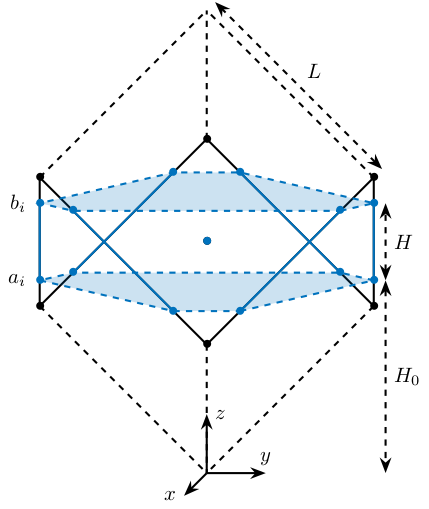
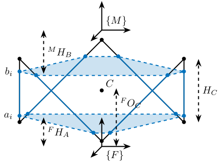

Cubic configuration for the Stewart Platform
Table of Contents
- 1. Configuration Analysis - Stiffness Matrix
- 1.1. Cubic Stewart platform centered with the cube center - Jacobian estimated at the cube center
- 1.2. Cubic Stewart platform centered with the cube center - Jacobian not estimated at the cube center
- 1.3. Cubic Stewart platform not centered with the cube center - Jacobian estimated at the cube center
- 1.4. Cubic Stewart platform not centered with the cube center - Jacobian estimated at the Stewart platform center
- 1.5. Conclusion
- 1.6. Having Cube’s center above the top platform
- 2. Functions
The discovery of the Cubic configuration is done in geng94_six_degree_of_freed_activ. Further analysis is conducted in
The specificity of the Cubic configuration is that each actuator is orthogonal with the others.
The cubic (or orthogonal) configuration of the Stewart platform is now widely used (preumont07_six_axis_singl_stage_activ,jafari03_orthog_gough_stewar_platf_microm).
According to preumont07_six_axis_singl_stage_activ, the cubic configuration provides a uniform stiffness in all directions and minimizes the crosscoupling from actuator to sensor of different legs (being orthogonal to each other).
To generate and study the Cubic configuration, generateCubicConfiguration is used (description in section 2.1).
The goal is to study the benefits of using a cubic configuration:
- Equal stiffness in all the degrees of freedom?
- No coupling between the actuators?
- Is the center of the cube an important point?
1 Configuration Analysis - Stiffness Matrix
1.1 Cubic Stewart platform centered with the cube center - Jacobian estimated at the cube center
We create a cubic Stewart platform (figure 1) in such a way that the center of the cube (black dot) is located at the center of the Stewart platform (blue dot). The Jacobian matrix is estimated at the location of the center of the cube.
stewart = initializeFramesPositions('H', 100e-3, 'MO_B', -50e-3); stewart = generateCubicConfiguration(stewart, 'Hc', 100e-3, 'FOc', 50e-3, 'FHa', 0, 'MHb', 0); stewart = computeJointsPose(stewart); stewart = initializeStrutDynamics(stewart, 'Ki', ones(6,1)); stewart = computeJacobian(stewart);

Figure 1: Centered cubic configuration
| 2 | 0 | -2.5e-16 | 0 | 2.1e-17 | 0 |
| 0 | 2 | 0 | -7.8e-19 | 0 | 0 |
| -2.5e-16 | 0 | 2 | -2.4e-18 | -1.4e-17 | 0 |
| 0 | -7.8e-19 | -2.4e-18 | 0.015 | -4.3e-19 | 1.7e-18 |
| 1.8e-17 | 0 | -1.1e-17 | 0 | 0.015 | 0 |
| 6.6e-18 | -3.3e-18 | 0 | 1.7e-18 | 0 | 0.06 |
1.2 Cubic Stewart platform centered with the cube center - Jacobian not estimated at the cube center
We create a cubic Stewart platform with center of the cube located at the center of the Stewart platform (figure 1). The Jacobian matrix is not estimated at the location of the center of the cube.
stewart = initializeFramesPositions('H', 100e-3, 'MO_B', 0); stewart = generateCubicConfiguration(stewart, 'Hc', 100e-3, 'FOc', 50e-3, 'FHa', 0, 'MHb', 0); stewart = computeJointsPose(stewart); stewart = initializeStrutDynamics(stewart, 'Ki', ones(6,1)); stewart = computeJacobian(stewart);
| 2 | 0 | -2.5e-16 | 1.4e-17 | -0.1 | 0 |
| 0 | 2 | 0 | 0.1 | 0 | 0 |
| -2.5e-16 | 0 | 2 | 3.4e-18 | -1.4e-17 | 0 |
| 1.4e-17 | 0.1 | 3.4e-18 | 0.02 | 1.1e-20 | 3.4e-18 |
| -0.1 | 0 | -1.4e-17 | 1.4e-19 | 0.02 | -1.7e-18 |
| 6.6e-18 | -3.3e-18 | 0 | 3.6e-18 | -1.7e-18 | 0.06 |
1.3 Cubic Stewart platform not centered with the cube center - Jacobian estimated at the cube center
Here, the “center” of the Stewart platform is not at the cube center (figure 2). The Jacobian is estimated at the cube center.

Figure 2: Not centered cubic configuration
stewart = initializeFramesPositions('H', 80e-3, 'MO_B', -40e-3); stewart = generateCubicConfiguration(stewart, 'Hc', 100e-3, 'FOc', 50e-3, 'FHa', 0, 'MHb', 0); stewart = computeJointsPose(stewart); stewart = initializeStrutDynamics(stewart, 'Ki', ones(6,1)); stewart = computeJacobian(stewart);
| 2 | 0 | -1.5e-16 | 0 | 0.04 | 0 |
| 0 | 2 | 0 | -0.04 | 0 | -2.8e-17 |
| -1.5e-16 | 0 | 2 | 1.2e-18 | -1e-17 | 0 |
| 0 | -0.04 | 1.2e-18 | 0.016 | 0 | 8.7e-19 |
| 0.04 | 0 | -6.2e-18 | -1.1e-19 | 0.016 | 8.7e-19 |
| -3.7e-19 | -2.5e-17 | 0 | 1.2e-18 | 8.7e-19 | 0.06 |
We obtain \(k_x = k_y = k_z\) and \(k_{\theta_x} = k_{\theta_y}\), but the Stiffness matrix is not diagonal.
1.4 Cubic Stewart platform not centered with the cube center - Jacobian estimated at the Stewart platform center
Here, the “center” of the Stewart platform is not at the cube center. The Jacobian is estimated at the center of the Stewart platform.
The center of the cube is at \(z = 110\). The Stewart platform is from \(z = H_0 = 75\) to \(z = H_0 + H_{tot} = 175\). The center height of the Stewart platform is then at \(z = \frac{175-75}{2} = 50\). The center of the cube from the top platform is at \(z = 110 - 175 = -65\).
stewart = initializeFramesPositions('H', 80e-3, 'MO_B', -30e-3); stewart = generateCubicConfiguration(stewart, 'Hc', 100e-3, 'FOc', 50e-3, 'FHa', 0, 'MHb', 0); stewart = computeJointsPose(stewart); stewart = initializeStrutDynamics(stewart, 'Ki', ones(6,1)); stewart = computeJacobian(stewart);
| 2 | 0 | -1.7e-16 | 0 | 4.9e-17 | 0 |
| 0 | 2 | 0 | -2.2e-17 | 0 | 2.8e-17 |
| -1.7e-16 | 0 | 2 | 1.1e-18 | -1.4e-17 | 1.4e-17 |
| 0 | -2.2e-17 | 1.1e-18 | 0.015 | 0 | 3.5e-18 |
| 4.4e-17 | 0 | -1.4e-17 | -5.7e-20 | 0.015 | -8.7e-19 |
| 6.6e-18 | 2.5e-17 | 0 | 3.5e-18 | -8.7e-19 | 0.06 |
We obtain \(k_x = k_y = k_z\) and \(k_{\theta_x} = k_{\theta_y}\), and the Stiffness matrix is diagonal.
1.5 Conclusion
- The cubic configuration permits to have \(k_x = k_y = k_z\) and \(k_{\theta_x} = k_{\theta_y}\)
- The stiffness matrix \(K\) is diagonal for the cubic configuration if the Jacobian is estimated at the cube center.
1.6 Having Cube’s center above the top platform
Let’s say we want to have a decouple dynamics above the top platform. Thus, we want the cube’s center to be located above the top center. This is possible, to do so:
- The position of the center of the cube should be positioned at A
- The Height of the “useful” part of the cube should be at least equal to two times the distance from F to A. It is possible to have small cube, but then to configuration is a little bit strange.
stewart = initializeFramesPositions('H', 100e-3, 'MO_B', 50e-3); FOc = stewart.H + stewart.MO_B(3); Hc = 2*(stewart.H + stewart.MO_B(3)); stewart = generateCubicConfiguration(stewart, 'Hc', Hc, 'FOc', FOc, 'FHa', 10e-3, 'MHb', 10e-3); stewart = computeJointsPose(stewart); stewart = initializeStrutDynamics(stewart, 'Ki', ones(6,1)); stewart = initializeJointDynamics(stewart, 'disable', true); stewart = initializeCylindricalPlatforms(stewart); stewart = initializeCylindricalStruts(stewart); stewart = computeJacobian(stewart); stewart = initializeStewartPose(stewart);
| 2 | 0 | -4.6e-16 | 0 | 4e-17 | 0 |
| 0 | 2 | 0 | -4.8e-17 | 0 | -3.5e-17 |
| -4.6e-16 | 0 | 2 | 1.5e-20 | 4e-17 | 0 |
| 0 | -4.8e-17 | 1.5e-20 | 0.00034 | 6.8e-21 | 4.2e-19 |
| 4e-17 | 0 | 4e-17 | -3e-21 | 0.00034 | -2.7e-20 |
| -1.7e-19 | -3.6e-17 | 0 | 4.2e-19 | -2.7e-20 | 0.0014 |
We obtain \(k_x = k_y = k_z\) and \(k_{\theta_x} = k_{\theta_y}\), but the Stiffness matrix is not diagonal.
2 Functions
2.1 generateCubicConfiguration: Generate a Cubic Configuration
This Matlab function is accessible here.
Function description
function [stewart] = generateCubicConfiguration(stewart, args) % generateCubicConfiguration - Generate a Cubic Configuration % % Syntax: [stewart] = generateCubicConfiguration(stewart, args) % % Inputs: % - stewart - A structure with the following fields % - H [1x1] - Total height of the platform [m] % - args - Can have the following fields: % - Hc [1x1] - Height of the "useful" part of the cube [m] % - FOc [1x1] - Height of the center of the cube with respect to {F} [m] % - FHa [1x1] - Height of the plane joining the points ai with respect to the frame {F} [m] % - MHb [1x1] - Height of the plane joining the points bi with respect to the frame {M} [m] % % Outputs: % - stewart - updated Stewart structure with the added fields: % - Fa [3x6] - Its i'th column is the position vector of joint ai with respect to {F} % - Mb [3x6] - Its i'th column is the position vector of joint bi with respect to {M}
Documentation

Figure 3: Cubic Configuration
Optional Parameters
arguments
stewart
args.Hc (1,1) double {mustBeNumeric, mustBePositive} = 60e-3
args.FOc (1,1) double {mustBeNumeric} = 50e-3
args.FHa (1,1) double {mustBeNumeric, mustBeNonnegative} = 15e-3
args.MHb (1,1) double {mustBeNumeric, mustBeNonnegative} = 15e-3
end
Position of the Cube
We define the useful points of the cube with respect to the Cube’s center. \({}^{C}C\) are the 6 vertices of the cubes expressed in a frame {C} which is located at the center of the cube and aligned with {F} and {M}.
sx = [ 2; -1; -1]; sy = [ 0; 1; -1]; sz = [ 1; 1; 1]; R = [sx, sy, sz]./vecnorm([sx, sy, sz]); L = args.Hc*sqrt(3); Cc = R'*[[0;0;L],[L;0;L],[L;0;0],[L;L;0],[0;L;0],[0;L;L]] - [0;0;1.5*args.Hc]; CCf = [Cc(:,1), Cc(:,3), Cc(:,3), Cc(:,5), Cc(:,5), Cc(:,1)]; % CCf(:,i) corresponds to the bottom cube's vertice corresponding to the i'th leg CCm = [Cc(:,2), Cc(:,2), Cc(:,4), Cc(:,4), Cc(:,6), Cc(:,6)]; % CCm(:,i) corresponds to the top cube's vertice corresponding to the i'th leg
Compute the pose
We can compute the vector of each leg \({}^{C}\hat{\bm{s}}_{i}\) (unit vector from \({}^{C}C_{f}\) to \({}^{C}C_{m}\)).
CSi = (CCm - CCf)./vecnorm(CCm - CCf);
We now which to compute the position of the joints \(a_{i}\) and \(b_{i}\).
stewart.Fa = CCf + [0; 0; args.FOc] + ((args.FHa-(args.FOc-args.Hc/2))./CSi(3,:)).*CSi; stewart.Mb = CCf + [0; 0; args.FOc-stewart.H] + ((stewart.H-args.MHb-(args.FOc-args.Hc/2))./CSi(3,:)).*CSi;
Bibliography
- [geng94_six_degree_of_freed_activ] Geng & Haynes, Six Degree-Of-Freedom Active Vibration Control Using the Stewart Platforms, IEEE Transactions on Control Systems Technology, 2(1), 45-53 (1994). link. doi.
- [preumont07_six_axis_singl_stage_activ] Preumont, Horodinca, Romanescu, de Marneffe, Avraam, Deraemaeker, Bossens & Abu Hanieh, A Six-Axis Single-Stage Active Vibration Isolator Based on Stewart Platform, Journal of Sound and Vibration, 300(3-5), 644-661 (2007). link. doi.
- [jafari03_orthog_gough_stewar_platf_microm] Jafari & McInroy, Orthogonal Gough-Stewart Platforms for Micromanipulation, IEEE Transactions on Robotics and Automation, 19(4), 595-603 (2003). link. doi.